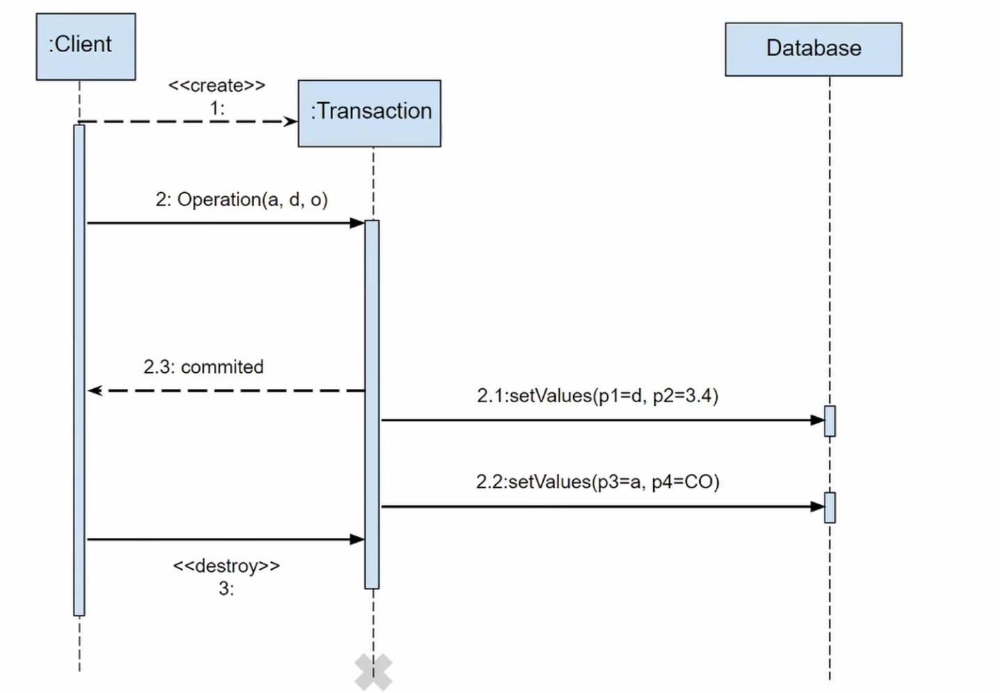
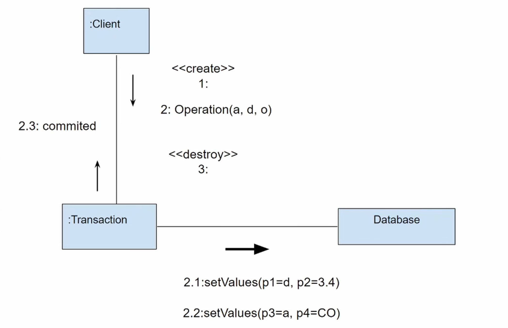

UML 通信图（协作图）
文档信息
创建时间：2025-11-28
可以查看 UML Communication Diagram Tutorial 视频学习
注意：通信图在 UML 1.x 版本中称为协作图（Collaboration Diagram），在 UML 2.0 之后正式更名为通信图（Communication Diagram），两者本质上是同一种图。
术语对照表
| 中文 | 英文 |
|---|---|
| 通信图/协作图 | Communication Diagram / Collaboration Diagram |
| 对象 | Object |
| 角色 | Role |
| 链接 | Link |
| 消息 | Message |
| 序号 | Sequence Number |
| 关联 | Association |
| 协作 | Collaboration |
| 路径表达式 | Path Expression |
1 目标
设计 UML 通信图往往出于以下的目标：
- 展示对象关系：强调对象之间的组织结构和关联关系。
- 描述消息传递：展示对象之间如何通过消息进行交互。
- 补充序列图：提供序列图的另一种视角，更关注对象关系而非时间顺序。
- 简化复杂交互：在某些场景下，通信图比序列图更简洁直观。
- 理解协作模式：帮助理解对象之间的协作模式和职责分配。
2 通信图 vs 序列图
通信图和序列图都用于描述对象之间的交互，但侧重点不同：
| 特性 | 序列图 | 通信图 |
|---|---|---|
| 侧重点 | 时间顺序 | 对象关系 |
| 布局 | 垂直时间线，从上到下 | 自由布局，强调关联 |
| 消息顺序 | 通过位置隐式表示 | 通过序号显式标注 |
| 适用场景 | 强调时序的复杂交互 | 强调对象关系的协作 |
| 可读性 | 时序清晰，但对象多时占空间 | 结构清晰，但消息多时难追踪 |
选择建议
- 如果需要强调时间顺序和消息的先后关系，使用序列图
- 如果需要强调对象的组织结构和关联关系，使用通信图
- 两种图可以互相转换，包含相同的信息，只是表现形式不同
3 组成
通信图主要由以下几个元素组成：
3.1 对象
- 对象（Object）：
- 定义：表示参与交互的实体，可以是类的实例、参与者或系统组件。
- 表示：用矩形框表示，格式为
对象名:类名或:类名。 - 特点：对象可以自由放置在图中任意位置，根据关联关系合理布局。
对象示例
:User- 表示 User 类的匿名实例user1:User- 表示名为 user1 的 User 类实例controller:OrderController- 表示名为 controller 的 OrderController 实例
3.2 链接
- 链接（Link）：
- 定义：表示对象之间的关联关系，是对象可以互相发送消息的前提。
- 表示：用实线连接两个对象。
- 特点：链接是对象之间的结构关系，通常对应类图中的关联关系。
链接示例
如果类 A 和类 B 之间有关联关系，那么在通信图中，A 的实例和 B 的实例之间可以有链接。链接表示这两个对象可以互相通信。

3.3 消息
- 消息（Message）：
- 定义：表示对象之间的通信，通常是方法调用或信号传递。
- 表示：在链接旁边用箭头和标签表示。
- 格式：
序号: 消息名(参数): 返回值
消息格式示例
1: login(username, password)- 第1条消息，调用 login 方法2: authenticate()- 第2条消息，调用 authenticate 方法3: result := query()- 第3条消息，调用 query 方法并返回 result
3.4 序号
- 序号（Sequence Number）：
- 定义：表示消息的发送顺序，是通信图的关键元素。
- 格式：使用数字编号，支持嵌套和分支。
- 规则：
- 简单序号：
1, 2, 3, ... - 嵌套调用：
1, 1.1, 1.2, 2, 2.1, ... - 并发消息：
1a, 1b或1.1a, 1.1b - 条件分支：
1: [条件] 消息名 - 迭代：
*: [循环条件] 消息名
- 简单序号：
序号编排示例
基本序号：
嵌套序号：
条件分支：
迭代：
3.5 消息类型
通信图支持多种消息类型：
- 同步消息：实心箭头
→，表示同步调用 - 异步消息：开放箭头
⇢，表示异步调用 - 返回消息：虚线箭头
⤶，表示返回值（通常省略） - 创建消息：标注
<<create>>，表示创建对象 - 销毁消息：标注
<<destroy>>，表示销毁对象
消息类型示例
1: processOrder() →- 同步调用2: sendEmail() ⇢- 异步调用3: <<create>>- 创建新对象
4 绘制步骤
绘制通信图的一般步骤：
- 识别对象：确定参与交互的所有对象
- 确定关联：分析对象之间的关联关系
- 绘制对象：在图中合理布局对象，相关对象放在靠近的位置
- 添加链接：用实线连接有关联关系的对象
- 标注消息：在链接上添加消息，包括序号和消息名
- 调整布局：优化对象位置，使消息流向清晰
- 添加说明：为复杂的交互添加必要的注释
5 最佳实践
5.1 布局原则
- 中心对象居中：将最重要或交互最多的对象放在中心位置
- 调用方在左：通常将发起者放在左侧，按调用流向布局
- 减少交叉：尽量避免链接和消息的交叉，保持图的清晰
- 分组相关对象：将紧密相关的对象放在一起
5.2 序号使用
- 保持连续：序号应该连续，便于追踪消息顺序
- 合理嵌套：使用嵌套序号表示方法调用的层次关系
- 简化复杂度：如果序号层次过深，考虑简化或分解交互
5.3 消息标注
- 清晰命名：使用清晰的方法名和参数
- 简化显示：对于简单的返回值，可以省略返回消息
- 添加条件：为条件分支明确标注条件表达式
6 应用场景
通信图常用于以下场景：
- 设计模式展示：展示对象之间的协作模式，如观察者模式、中介者模式
- 架构设计：展示系统组件之间的交互关系
- 简单交互：对于消息不多但对象关系复杂的场景
- 补充序列图：从不同角度展示相同的交互
- 代码重构：理解现有代码中对象的协作关系
7 与序列图的转换
通信图和序列图可以互相转换，它们包含相同的信息：
序列图 → 通信图
- 将序列图中的对象转为通信图中的对象
- 有消息交互的对象之间添加链接
- 将消息按时间顺序编号，标注在相应链接上
- 调整对象布局，使图形更清晰
通信图 → 序列图
- 将通信图中的对象放在序列图顶部
- 按对象创建生命线
- 按消息序号从上到下排列消息
- 添加激活框表示对象的活动状态
转换示例
 
8 实践技巧
- 选择合适的视角：根据需要强调的内容选择序列图或通信图
- 保持一致性：在同一个项目中，保持序号风格和命名规范的一致性
- 不要过度复杂：如果通信图变得难以理解，考虑分解或使用序列图
- 工具支持：使用 UML 工具（如 PlantUML、StarUML）可以自动生成和转换
- 结合使用：在文档中可以同时提供序列图和通信图，从不同角度理解系统
提示
通信图虽然不如序列图常用，但在某些场景下能提供更简洁的视角。特别是在展示设计模式、分析对象协作、或者对象关系比时序更重要的场景中，通信图是一个很好的选择。在实际项目中，可以根据具体需求灵活选择使用序列图还是通信图。